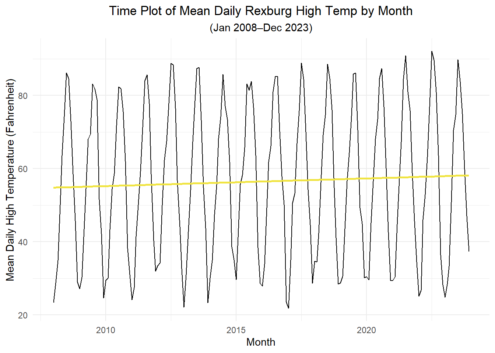
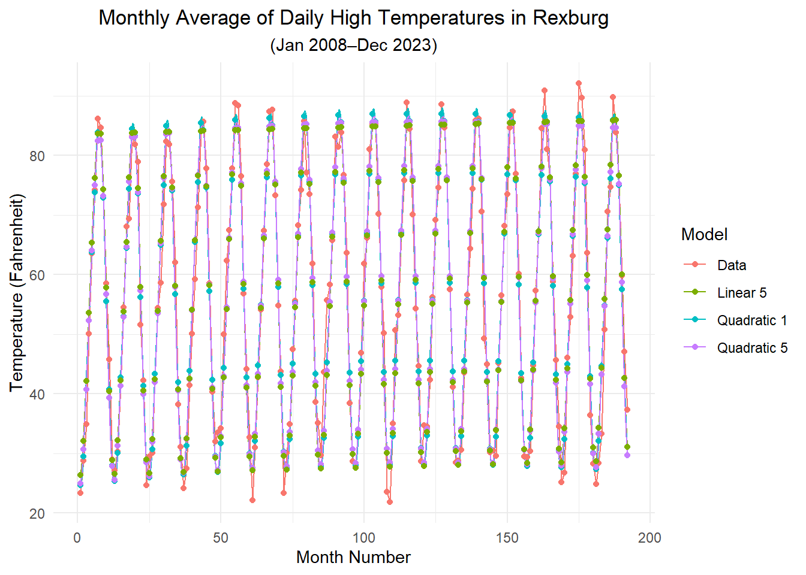

State the additive model with harmonic seasonal component
Simulate a time series with harmonic seasonal components
Identify an appropriate function to model the trend in a given time series
Represent seasonal factors using harmonic seasonal terms
Identify a parsimonious set of harmonic terms for use in a regression model
Fit the additive model with harmonic seasonal component to real-world data
Evaluate residuals using a correlogram and partial correlogram to ensure they meet the assumptions
Model residuals using an \(AR(p)\) model to meet the exogeneity assumption
Apply model selection criteria
Use AIC to aid in model selection
Preparation
Read Section 5.6
Learning Journal Exchange (10 min)
Review another student’s journal
What would you add to your learning journal after reading another student’s?
What would you recommend the other student add to their learning journal?
Sign the Learning Journal review sheet for your peer
Class Activity: Joys of Trigonometry (15 min)
In the previous lesson, we learned how to incorporate an indicator (or dummy) variable for each season in a period. If there are twelve months in a year, this requires having twelve parameters in the model. Given that many seasonal changes are gradual and can be modeled by a continuous function, we can use sines and cosines to approximate the seasonal variation. This can lead to a smaller number of parameters than is required for the indicator variable approach.
Review of Trigonometry
Consider the sine wave with the following parameters:
\(A\):\(~~\) the amplitude,
\(f\):\(~~~\) the frequency or the number of cycles per sampling interval, and
\(\phi\):\(~~~\) the phase shift.
\[
A \sin ( 2 \pi f t + \phi )
\]
Here is an interactive plot of this function. Adjust the values of \(A\), \(f\), and \(\phi\) to see their effect on the function.
Notice that this sine function is not linear in the parameters \(A\) and \(\phi\).
\[
A \sin ( 2 \pi f t + \phi )
\]
One of the trigonometric sum and difference identities is:
\[\begin{align*}
A \sin ( 2 \pi f t + \phi )
&= \underbrace{A \cos( \phi )}_{\alpha_s} \cdot \sin ( 2 \pi f t ) + \underbrace{A \sin( \phi )}_{\alpha_c} \cdot \cos ( 2 \pi f t ) \\
&= \alpha_s \cdot \sin ( 2 \pi f t ) + \alpha_c \cdot \cos ( 2 \pi f t )
\end{align*}\]
We have transformed this from something that is not linear in the parameters \(A\) and \(\phi\) to an expression that is linear in the parameters \(\alpha_s\) and \(\alpha_c\).
We can denote the frequency of a sine function as \(f = \frac{i}{s}\), where \(s\) is the number of seasons in a cycle and \(i\) is some integer. This leads the following representation:
\[\begin{align*}
A \sin \left( \frac{2 \pi i t}{s} + \phi \right)
&= \underbrace{A \cos( \phi )}_{\alpha_s} \cdot \sin \left( \frac{2 \pi i t}{s} \right) + \underbrace{A \sin( \phi )}_{\alpha_c} \cdot \cos \left( \frac{2 \pi i t}{s} \right) \\
&= \alpha_s \cdot \sin \left( \frac{2 \pi i t}{s} \right) + \alpha_c \cdot \cos \left( \frac{2 \pi i t}{s} \right)
\end{align*}\]
Figure 1 and Figure 2 illustrate these sine and cosine functions with various values of \(i\).
Show the code
create_sine_df <-function(i, cycle_length =12) { df <-tibble(t =seq(from =0, to = cycle_length, length.out =501),value =sin(2* pi * i * t / cycle_length),i =right(paste0(" ", as.character(i)), 2) )}sine_df <-create_sine_df(i =1)for (i in2:6) { sine_df <- sine_df |>bind_rows(create_sine_df(i))}ggplot(sine_df, aes(x = t, y =28+ value -4*as.numeric(i), color = i)) +geom_line() +# geom_point(data = data.frame(x = 1:6, y = seq(4,24,4)), aes(x=x, y=y)) +scale_y_continuous(breaks =seq(4,24,4),minor_breaks =NULL,labels =NULL ) +scale_x_continuous(breaks =c(0:12),minor_breaks =NULL ) +scale_color_discrete(name ="i") +labs(x ="t", y ="Sine Value", title ="Sine Functions with Different Frequencies") +theme_minimal() +theme(plot.title =element_text(hjust =0.5) )
Figure 1: Sine Functions with Various Frequencies
Show the code
create_cosine_df <-function(i, cycle_length =12) { df <-tibble(t =seq(from =0, to = cycle_length, length.out =501),value =cos(2* pi * i * t / cycle_length),i =right(paste0(" ", as.character(i)), 2) )}cosine_df <-create_cosine_df(i =1)for (i in2:6) { cosine_df <- cosine_df |>bind_rows(create_cosine_df(i))}ggplot(cosine_df, aes(x = t, y =28+ value -4*as.numeric(i), color = i)) +geom_line() +# geom_point(data = data.frame(x = 1:6, y = seq(4,24,4)), aes(x=x, y=y)) +scale_y_continuous(breaks =seq(4,24,4),minor_breaks =NULL,labels =NULL ) +scale_x_continuous(breaks =c(0:12),minor_breaks =NULL ) +scale_color_discrete(name ="i") +labs(x ="t", y ="Cosine Value", title ="Cosine Functions with Different Frequencies") +theme_minimal() +theme(plot.title =element_text(hjust =0.5) )
Figure 2: Cosine Functions with Various Frequencies
In the next section, we will take a linear combination of functions like those above to model the seasonal component.
Fourier Series
We now explore an important mathematical concept that allows us to approximate any periodic function. If we have an infinite number of terms, the FOurier Series described below gives an exact representation of the function.
Fourier Series
The Fourier Series is an infinite series representation of a smooth function \(f(t)\) with period \(s\):
The function \(f(t)\) can be approximated to any desired level of precision by truncating the series after a sufficient number of terms. For the purpose of this discussion, we will define “one term” as an expression of the form \[
\left\{ A_i \sin \left( \frac{2\pi i t}{s} \right) + B_i \cos \left( \frac{2\pi i t}{s} \right) \right\}
\]
Fitting a Seasonal Component
The Fourier series exists for any smooth (continuously differentiable) function. Note theoretically, this allows us to obtain the value of the function at any real value by using this series. However, for a discrete time series with \(s\) seasons, we only need to evaluate the function at a finite number of points: \(t = 1, 2, 3, \ldots, s-1, s\). For example, in the previous lesson, we used twelve indicator variables to pass through twelve points in a monthly seasonal component to a time series with annual cycles.
It turns out, that we only need six terms (which involves twelve coefficients) to fit monthly data with annual cycles. In general, we only need to obtain \(\left\lfloor \frac{s}{2} \right\rfloor\) terms of this sum to fit the seasonal values perfectly.
Table 1: A few examples of seasonal patterns and the corresponding values of \(s\) and \(\left\lfloor \frac{s}{2} \right\rfloor\)
Pattern
Number of Seasons, \(s\)
Maximum terms in the sum, \(\left\lfloor \frac{s}{2} \right\rfloor\)
Days in a Week
7
3
Quarters in a Year
4
2
Months in a Year
12
6
Note that if \(s\) is even and \(i=\frac{s}{2}\), \[
\sin \left( \frac{2\pi i t}{s} \right) = \sin \left( \frac{2\pi \cdot \frac{s}{2} \cdot t}{s} \right) = \sin \left( \pi t \right) = 0
\] for all integer values of \(t\). So, this term must be omitted from the model. If we try to include it in the model, the coefficient will be rediculously large, as R trys to make the product of something very close to 0 (the value from the sine function) and the coefficient multiply to some reasonably small number.
The method for fitting seaonal components using indicator variables does not assume any relationship between successive seasons. However, values observed in January are often highly correlated with values observed in February, etc. Fitting a seasonal component using terms in the Fourier Series can often yield a good approximation for the periodic cycles with only a few terms.
For a time series with \(s\) seasons per cycle, our additive model can be written as:
Note that \(\sin \left( \frac{2\pi \cdot 6 t}{12} \right) = 0\) for all integer values of \(t\), so we can omit the term \(A_6 \sin \left( \frac{2\pi \cdot 6 t}{12} \right)\).
As noted above, we can often use a relatively small subset of these terms to get a good approximation of the seasonal component.
Simulation
The following simulation illustrates harmonic seasonal terms. Adjust the values of the parameters to create different seasonal patterns. Note that this is just a sum of sine and cosine function with various frequencies and amplitudes.
Class Activity: Monthly Average High Temperature in Rexburg (xxx min)
Visualization of the Time Series
Consider the mean monthly high temperature in Rexburg.
Show the code
weather_df <- rio::import("data/rexburg_weather_monthly.csv") |>mutate(dates =my(date_text)) |>filter(dates >=my("1/2008") & dates <=my("12/2023")) |>rename(x = avg_daily_high_temp) |>mutate(TIME =1:n()) |>mutate(cos1 =cos(2* pi *1* TIME/12),cos2 =cos(2* pi *2* TIME/12),cos3 =cos(2* pi *3* TIME/12),cos4 =cos(2* pi *4* TIME/12),cos5 =cos(2* pi *5* TIME/12),cos6 =cos(2* pi *6* TIME/12),sin1 =sin(2* pi *1* TIME/12),sin2 =sin(2* pi *2* TIME/12),sin3 =sin(2* pi *3* TIME/12),sin4 =sin(2* pi *4* TIME/12),sin5 =sin(2* pi *5* TIME/12),sin6 =sin(2* pi *6* TIME/12)) |>as_tsibble(index = TIME)weather_df |>as_tsibble(index = dates) |>autoplot(.vars = x) +geom_smooth(method ="lm", se =FALSE, color ="#F0E442") +labs(x ="Month",y ="Mean Daily High Temperature (Fahrenheit)",title ="Time Plot of Mean Daily Rexburg High Temp by Month",subtitle =paste0("(", format(weather_df$dates %>%head(1), "%b %Y"), endash, format(weather_df$dates %>%tail(1), "%b %Y"), ")") ) +theme_minimal() +theme(plot.title =element_text(hjust =0.5),plot.subtitle =element_text(hjust =0.5) )

Model Selection
Cubic Trend: Full Model
Visually, we can identify a positive linear trend in the data. It is possible that there are higher-order properties of the trend. We will include a quadratic and cubic term in our search for a model.
In addition to modeling the trend, we need to include terms for the seasonal component. We start with a full model that includes all six of the the sine and cosine terms from the summation above.
forecast_df <- full_cubic_lm |>forecast(weather_df, ) |>as_tibble() |> dplyr::select(TIME, .mean) |>rename(pred = .mean)weather_df |>left_join(forecast_df, by ="TIME") |>as_tsibble(index = dates) |>autoplot(.vars = x) +geom_smooth(method ="lm", se =FALSE, color ="#F0E442") +geom_line(aes(y = pred), color ="#56B4E9", alpha =0.75) +labs(x ="Month",y ="Mean Daily High Temperature (Fahrenheit)",title ="Time Plot of Mean Daily Rexburg High Temp by Month",subtitle =paste0("(", format(weather_df$dates %>%head(1), "%b %Y"), endash, format(weather_df$dates %>%tail(1), "%b %Y"), ")") ) +theme_minimal() +theme(plot.title =element_text(hjust =0.5),plot.subtitle =element_text(hjust =0.5) )
`geom_smooth()` using formula = 'y ~ x'
The cubic term in the trend is not significant, but the quadratic term is! The coefficient on the quadratic term is very small and negative. This suggests the data may indicate a decrease in the rate of global warming.
Caution
If you choose a different range of dates, you may get a different result. The regression model is fitted to the data, not to the physical situation.
Quadratic Trend: Full Model
We now fit a quadratic model that includes all of the seasonal terms.
We look for the smallest value of the AIC, AICc, and BIC criteria. These methods do not have to agree with each other, and they provide different perspectives based on their various algorithms. Notice that the AIC and AICc criteria both suggest the model we titled “Reduced Quadratic 1:”
If there are two competing models that are both satisfactory, it is usually preferable to choose the more parsimonious (or simpler) model.
Sometimes there will be a model that does not attain the lowest value of these measures, yet you may still want to use it if the AIC, AICc, and BIC values are not too much larger than the smallest values. Why might you do this? If the model is particularly interpretable or makes logical sense in the context of the physical situation, it is better than a model with a lower AIC that is not readily interpretable.
You may even choose to include terms that are not statistically significant, if you determine they are practically important. For example, if a quadratic term is significant, but the linear term is not, it is a good practice to include the linear term anyway.
Notice that the linear models corresponding to the “Reduced Quadratic 1” and “Reduced Quadratic 5” models have AIC/AICc/BIC values that are not much larger than the minimum values. Given other external evidence related to global warming, it is unlikely that the second derivative of the function representing the Earth’s mean temperature is negative. In other words, it does not seem like the rate at which the earth is warming is decreasing. Even if there is a quadratic component to the trend, it is not visible to the eye in the time plot.
For these reasons, we will apply the “Reduced Linear 5” model. This model implies a linear trend in the mean temperature of the Earth. The BIC for this model is not much bigger than the BIC for the “Reduced Quadratic 5” model. This model is simpler than the “Reduced Quadratic 1,” “Reduced Quadratic 5,” and “Reduced Linear 1” models.
When the independent variable (the measure of time) is large, floating point errors in the computation of the regression coefficents can be substantial.
To avoid serious floating point errors, we standardize the time variable. First, compute the sine and cosine terms using the original time variable, then transform the time variable by subtracting its mean and dividing by its standard deviation. (In other words, compute a \(z\)-score.)
The model is adjusted accordingly after fitting.
We will demonstrate this with the “Reduced Linear 5” and “Reduced Quadratic 5” models.
Computing the standardized time variable
Our time variable was a simple incremented value counting the months ranging from 1 (representing 1/2008) to 192 (representing 12/2023).
We standardize this variable by the transformation:
If we want, we could rewrite this by expanding out the polynomial in the first three terms, but it is not necessary.
Comparison of Results
Show the code
num_months <- weather_df |>as_tibble() |> dplyr::select(TIME) |>tail(1) |>pull()df <-tibble( TIME =seq(1, num_months, 0.01) ) |>mutate(cos1 =cos(2* pi *1* TIME/12),cos2 =cos(2* pi *2* TIME/12),cos3 =cos(2* pi *3* TIME/12),cos4 =cos(2* pi *4* TIME/12),cos5 =cos(2* pi *5* TIME/12),cos6 =cos(2* pi *6* TIME/12),sin1 =sin(2* pi *1* TIME/12),sin2 =sin(2* pi *2* TIME/12),sin3 =sin(2* pi *3* TIME/12),sin4 =sin(2* pi *4* TIME/12),sin5 =sin(2* pi *5* TIME/12),sin6 =sin(2* pi *6* TIME/12)) |>mutate(zTIME = (TIME -mean(TIME)) /sd(TIME)) |>as_tsibble(index = TIME)quad1_ts <- reduced1_quadratic_lm |>forecast(df) |>as_tibble() |> dplyr::select(TIME, .mean) |>rename(value = .mean) |>mutate(Model ="Quadratic 1")quad5_ts <- reduced5_quadratic_lm |>forecast(df) |>as_tibble() |> dplyr::select(TIME, .mean) |>rename(value = .mean) |>mutate(Model ="Quadratic 5")linear5_ts <- reduced5_linear_lm |>forecast(df) |>as_tibble() |> dplyr::select(TIME, .mean) |>rename(value = .mean) |>mutate(Model ="Linear 5")data_ts <- weather_df |>as_tibble() |>rename(value = x) |>mutate(Model ="Data") |> dplyr::select(TIME, value, Model)combined_ts <-bind_rows(data_ts, quad1_ts, quad5_ts, linear5_ts) point_ts <- combined_ts |>filter(TIME ==floor(TIME))combined_ts |>ggplot(aes(x = TIME, y = value, color = Model)) +geom_line() +geom_point(data = point_ts) +labs(x ="Month Number",y ="Temperature (Fahrenheit)",title ="Monthly Average of Daily High Temperatures in Rexburg",subtitle =paste0("(", format(weather_df$dates %>%head(1), "%b %Y"), endash, format(weather_df$dates %>%tail(1), "%b %Y"), ")") ) +theme_minimal() +theme(plot.title =element_text(hjust =0.5),plot.subtitle =element_text(hjust =0.5) )

Small-Group Activity: River Flow (15 min)
The Fall River is a tributary of the Henrys Fork of the Snake River northeast of Rexburg, Idaho. The United States Geological Survey (USGS) provides data every fifteen minutes on the flow rate (in cubic feet per second, cfs) of this river.
This map shows the location of the monitoring station. On the left, you can see where Highway 20 intersects with Main St. in Ashton, Idaho.
Here is a glimpse of the raw data:
agency_cd
site_no
datetime
flow
code
USGS
13046995
1998-10-01 00:00 MDT
662
A:[91]
USGS
13046995
1998-10-01 00:15 MDT
655
A:[91]
USGS
13046995
1998-10-01 00:30 MDT
655
A:[91]
USGS
13046995
1998-10-01 00:45 MDT
662
A:[91]
⋮
⋮
⋮
⋮
⋮
USGS
13046995
2023-09-30 23:00 MDT
547
A
USGS
13046995
2023-09-30 23:15 MDT
547
A
USGS
13046995
2023-09-30 23:30 MDT
547
A
USGS
13046995
2023-09-30 23:45 MDT
552
A
The 2023 water year goes from October 1, 2022 to September 30, 2023. The data starts with the 1999 water year and goes through the 2023 water year.
We will average the flow rates across the first and last half of each month, so there are 24 values in a year. For various reasons, there are gaps in the data, even after averaging across the first and last half of the month. We impute the missing values by linear interpolation using the zoo package. This just means that when we encounter NAs, we fit a line between the most recent observed value and the next observed value. Then, we fill all the NAs in with the value given by the liner relationship between the two points.
fallriver_ts <- fallriver_ts0 |># compute additional variables needed for the regressionmutate(TIME =1:n()) |>mutate(cos1 =cos(2* pi *1* TIME/24),cos2 =cos(2* pi *2* TIME/24),cos3 =cos(2* pi *3* TIME/24),cos4 =cos(2* pi *4* TIME/24),cos5 =cos(2* pi *5* TIME/24),cos6 =cos(2* pi *6* TIME/24),cos7 =cos(2* pi *7* TIME/24),cos8 =cos(2* pi *8* TIME/24),cos9 =cos(2* pi *9* TIME/24),cos10 =cos(2* pi *10* TIME/24),cos11 =cos(2* pi *11* TIME/24),cos12 =cos(2* pi *12* TIME/24),sin1 =sin(2* pi *1* TIME/24),sin2 =sin(2* pi *2* TIME/24),sin3 =sin(2* pi *3* TIME/24),sin4 =sin(2* pi *4* TIME/24),sin5 =sin(2* pi *5* TIME/24),sin6 =sin(2* pi *6* TIME/24),sin7 =sin(2* pi *7* TIME/24),sin8 =sin(2* pi *8* TIME/24),sin9 =sin(2* pi *9* TIME/24),sin10 =sin(2* pi *10* TIME/24),sin11 =sin(2* pi *11* TIME/24),# sin12 = sin(2 * pi * 12 * TIME/24) # zero for all integer values of t ) # plot the time seriesfallriver_ts |>autoplot(.vars = flow) +labs(x ="Date",y ="Flow (cubic feet per second, cfs)",title ="Fall River Flow Rate (cfs)",subtitle ="Above the Yellowstone Canal near Squirrel, Idaho" ) +theme_minimal() +theme(plot.title =element_text(hjust =0.5),plot.subtitle =element_text(hjust =0.5) )
# Read in retail sales data for "all other general merchandise stores"retail_ts <- rio::import("data/retail_by_business_type.parquet") |>filter(naics ==45299) |>as_tsibble(index = month)retail_ts |>autoplot(.vars = sales_millions) +labs(x ="Month",y ="Sales (Millions of U.S. Dollars)",title =paste0(retail_ts$business[1], " (", retail_ts$naics[1], ")") ) +theme_minimal() +theme(plot.title =element_text(hjust =0.5))


 Here is a glimpse of the raw data:
Here is a glimpse of the raw data: